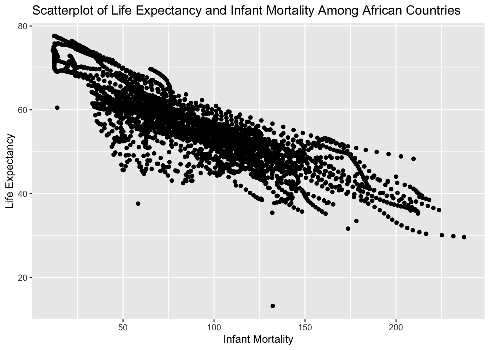
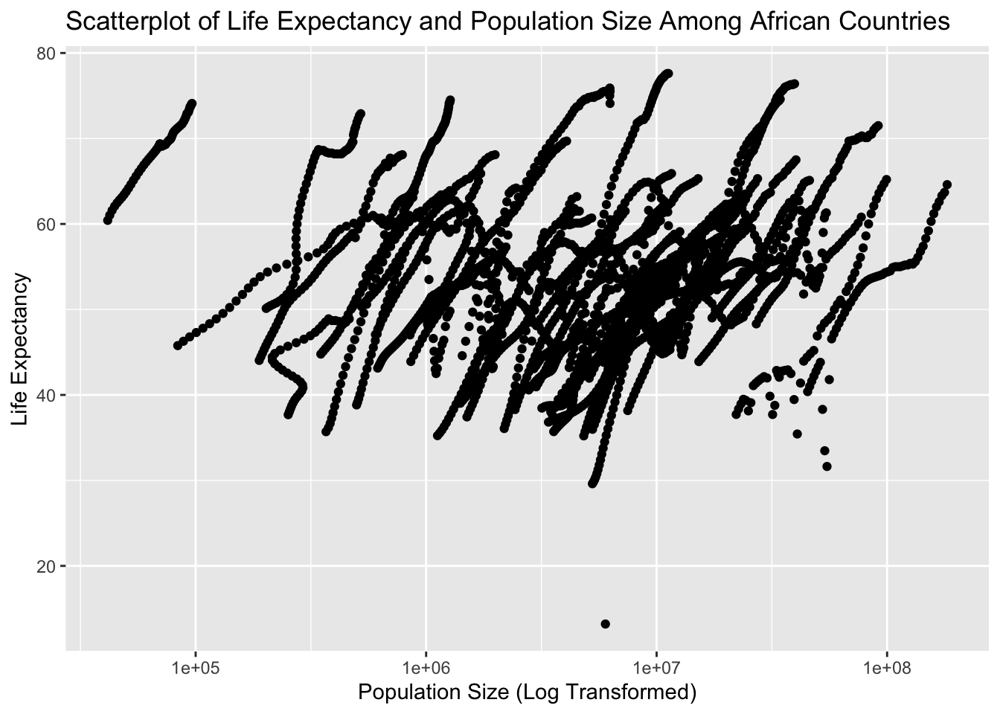

###Loading and Checking Data
#first loading some packages
#for plotting
library(ggplot2)
library(tidyverse)
#loading the dslabs
library(dslabs)
#help file for gapminder
help(gapminder)
#data structure overview
str(gapminder)## 'data.frame': 10545 obs. of 9 variables:
## $ country : Factor w/ 185 levels "Albania","Algeria",..: 1 2 3 4 5 6 7 8 9 10 ...
## $ year : int 1960 1960 1960 1960 1960 1960 1960 1960 1960 1960 ...
## $ infant_mortality: num 115.4 148.2 208 NA 59.9 ...
## $ life_expectancy : num 62.9 47.5 36 63 65.4 ...
## $ fertility : num 6.19 7.65 7.32 4.43 3.11 4.55 4.82 3.45 2.7 5.57 ...
## $ population : num 1636054 11124892 5270844 54681 20619075 ...
## $ gdp : num NA 1.38e+10 NA NA 1.08e+11 ...
## $ continent : Factor w/ 5 levels "Africa","Americas",..: 4 1 1 2 2 3 2 5 4 3 ...
## $ region : Factor w/ 22 levels "Australia and New Zealand",..: 19 11 10 2 15 21 2 1 22 21 ...## country year infant_mortality life_expectancy
## Albania : 57 Min. :1960 Min. : 1.50 Min. :13.20
## Algeria : 57 1st Qu.:1974 1st Qu.: 16.00 1st Qu.:57.50
## Angola : 57 Median :1988 Median : 41.50 Median :67.54
## Antigua and Barbuda: 57 Mean :1988 Mean : 55.31 Mean :64.81
## Argentina : 57 3rd Qu.:2002 3rd Qu.: 85.10 3rd Qu.:73.00
## Armenia : 57 Max. :2016 Max. :276.90 Max. :83.90
## (Other) :10203 NA's :1453
## fertility population gdp continent
## Min. :0.840 Min. :3.124e+04 Min. :4.040e+07 Africa :2907
## 1st Qu.:2.200 1st Qu.:1.333e+06 1st Qu.:1.846e+09 Americas:2052
## Median :3.750 Median :5.009e+06 Median :7.794e+09 Asia :2679
## Mean :4.084 Mean :2.701e+07 Mean :1.480e+11 Europe :2223
## 3rd Qu.:6.000 3rd Qu.:1.523e+07 3rd Qu.:5.540e+10 Oceania : 684
## Max. :9.220 Max. :1.376e+09 Max. :1.174e+13
## NA's :187 NA's :185 NA's :2972
## region
## Western Asia :1026
## Eastern Africa : 912
## Western Africa : 912
## Caribbean : 741
## South America : 684
## Southern Europe: 684
## (Other) :5586## [1] "data.frame"###Processing Data
#data processing chunk
#the following code subsets the data from African countries
#and names the new dataset africadata
africadata <- gapminder[which(gapminder$continent=='Africa'), ]
#checking to make sure it worked using table
#here we see that only observations from Africa remain
table(africadata$continent)##
## Africa Americas Asia Europe Oceania
## 2907 0 0 0 0#new data1: making new variable/object that contains only infant_mortality and life_expectancy
select1 <- c("infant_mortality", "life_expectancy")
newdata1 <- africadata[select1]
#newdata2: making new variable/object that contains only population and life_expectancy
select2 <- c("population", "life_expectancy")
newdata2 <- africadata[select2]
#checking newdata1 with str and summary
str(newdata1)## 'data.frame': 2907 obs. of 2 variables:
## $ infant_mortality: num 148 208 187 116 161 ...
## $ life_expectancy : num 47.5 36 38.3 50.3 35.2 ...## infant_mortality life_expectancy
## Min. : 11.40 Min. :13.20
## 1st Qu.: 62.20 1st Qu.:48.23
## Median : 93.40 Median :53.98
## Mean : 95.12 Mean :54.38
## 3rd Qu.:124.70 3rd Qu.:60.10
## Max. :237.40 Max. :77.60
## NA's :226## 'data.frame': 2907 obs. of 2 variables:
## $ population : num 11124892 5270844 2431620 524029 4829291 ...
## $ life_expectancy: num 47.5 36 38.3 50.3 35.2 ...## population life_expectancy
## Min. : 41538 Min. :13.20
## 1st Qu.: 1605232 1st Qu.:48.23
## Median : 5570982 Median :53.98
## Mean : 12235961 Mean :54.38
## 3rd Qu.: 13888152 3rd Qu.:60.10
## Max. :182201962 Max. :77.60
## NA's :51###Plotting
#plotting
#plotting life expectancy and infant mortality
ggplot(newdata1, aes(x=infant_mortality, y=life_expectancy)) + geom_point() +
ggtitle("Scatterplot of Life Expectancy and Infant Mortality Among African Countries") +
xlab("Infant Mortality") + ylab("Life Expectancy")## Warning: Removed 226 rows containing missing values (geom_point).
#plotting life expectancy and population size(log transformed)
ggplot(newdata2, aes(x=population, y=life_expectancy)) + geom_point() +
scale_x_log10() + ggtitle("Scatterplot of Life Expectancy and Population Size Among African Countries") + xlab("Population Size (Log Transformed)") + ylab("Life Expectancy")## Warning: Removed 51 rows containing missing values (geom_point).
#taking another look at africa data
#We notice the year variable. After using the table function, we see that
#there are 51 countries with data from 1960 to 2016. There are repeated measures for each country, which causes the "streaks" of data
table(africadata$year)##
## 1960 1961 1962 1963 1964 1965 1966 1967 1968 1969 1970 1971 1972 1973 1974 1975
## 51 51 51 51 51 51 51 51 51 51 51 51 51 51 51 51
## 1976 1977 1978 1979 1980 1981 1982 1983 1984 1985 1986 1987 1988 1989 1990 1991
## 51 51 51 51 51 51 51 51 51 51 51 51 51 51 51 51
## 1992 1993 1994 1995 1996 1997 1998 1999 2000 2001 2002 2003 2004 2005 2006 2007
## 51 51 51 51 51 51 51 51 51 51 51 51 51 51 51 51
## 2008 2009 2010 2011 2012 2013 2014 2015 2016
## 51 51 51 51 51 51 51 51 51###More data processing
#more data processing
#figuring out which years have missing data for infant mortality
#here I used "table" to show which years had complete data. Those with 51
#were complete and anything less than that are incomplete
table(africadata$year,(africadata$infant_mortality=="Na"))##
## FALSE
## 1960 41
## 1961 34
## 1962 35
## 1963 35
## 1964 36
## 1965 37
## 1966 38
## 1967 40
## 1968 40
## 1969 44
## 1970 46
## 1971 45
## 1972 45
## 1973 45
## 1974 46
## 1975 46
## 1976 48
## 1977 48
## 1978 49
## 1979 49
## 1980 50
## 1981 50
## 1982 51
## 1983 51
## 1984 51
## 1985 51
## 1986 51
## 1987 51
## 1988 51
## 1989 51
## 1990 51
## 1991 51
## 1992 51
## 1993 51
## 1994 51
## 1995 51
## 1996 51
## 1997 51
## 1998 51
## 1999 51
## 2000 51
## 2001 51
## 2002 51
## 2003 51
## 2004 51
## 2005 51
## 2006 51
## 2007 51
## 2008 51
## 2009 51
## 2010 51
## 2011 51
## 2012 51
## 2013 51
## 2014 51
## 2015 51
## 2016 0#subsetting the data from year 2000
africadata2000 <- africadata[which(africadata$year==2000), ]
#checking using str and summary
str(africadata2000)## 'data.frame': 51 obs. of 9 variables:
## $ country : Factor w/ 185 levels "Albania","Algeria",..: 2 3 18 22 26 27 29 31 32 33 ...
## $ year : int 2000 2000 2000 2000 2000 2000 2000 2000 2000 2000 ...
## $ infant_mortality: num 33.9 128.3 89.3 52.4 96.2 ...
## $ life_expectancy : num 73.3 52.3 57.2 47.6 52.6 46.7 54.3 68.4 45.3 51.5 ...
## $ fertility : num 2.51 6.84 5.98 3.41 6.59 7.06 5.62 3.7 5.45 7.35 ...
## $ population : num 31183658 15058638 6949366 1736579 11607944 ...
## $ gdp : num 5.48e+10 9.13e+09 2.25e+09 5.63e+09 2.61e+09 ...
## $ continent : Factor w/ 5 levels "Africa","Americas",..: 1 1 1 1 1 1 1 1 1 1 ...
## $ region : Factor w/ 22 levels "Australia and New Zealand",..: 11 10 20 17 20 5 10 20 10 10 ...## country year infant_mortality life_expectancy
## Algeria : 1 Min. :2000 Min. : 12.30 Min. :37.60
## Angola : 1 1st Qu.:2000 1st Qu.: 60.80 1st Qu.:51.75
## Benin : 1 Median :2000 Median : 80.30 Median :54.30
## Botswana : 1 Mean :2000 Mean : 78.93 Mean :56.36
## Burkina Faso: 1 3rd Qu.:2000 3rd Qu.:103.30 3rd Qu.:60.00
## Burundi : 1 Max. :2000 Max. :143.30 Max. :75.00
## (Other) :45
## fertility population gdp continent
## Min. :1.990 Min. : 81154 Min. :2.019e+08 Africa :51
## 1st Qu.:4.150 1st Qu.: 2304687 1st Qu.:1.274e+09 Americas: 0
## Median :5.550 Median : 8799165 Median :3.238e+09 Asia : 0
## Mean :5.156 Mean : 15659800 Mean :1.155e+10 Europe : 0
## 3rd Qu.:5.960 3rd Qu.: 17391242 3rd Qu.:8.654e+09 Oceania : 0
## Max. :7.730 Max. :122876723 Max. :1.329e+11
##
## region
## Eastern Africa :16
## Western Africa :16
## Middle Africa : 8
## Northern Africa : 6
## Southern Africa : 5
## Australia and New Zealand: 0
## (Other) : 0###More plotting (for year 2000 this time)
#more plotting
#plotting life expectancy and infant mortality
ggplot(africadata2000, aes(x=infant_mortality, y=life_expectancy)) + geom_point() + ggtitle("Scatterplot of Life Expectancy and Infant Mortality Among African Countries") +
xlab("Infant Mortality") + ylab("Life Expectancy")#plotting life expectancy and population size(log transformed)
ggplot(africadata2000, aes(x=population, y=life_expectancy)) + geom_point() +
scale_x_log10() + ggtitle("Scatterplot of Life Expectancy and Population Size Among African Countries") + xlab("Population Size (Log Transformed)") + ylab("Life Expectancy")###A simple fit
#a simple fit
#fit1: life expectancy as outcome and infant mortality as predictor
fit1 <- lm(africadata2000$life_expectancy ~ africadata2000$infant_mortality)
#fit2: life expectancy as outcome and population size as predictor
fit2 <- lm(africadata2000$life_expectancy ~ africadata2000$population)
summary(fit1)##
## Call:
## lm(formula = africadata2000$life_expectancy ~ africadata2000$infant_mortality)
##
## Residuals:
## Min 1Q Median 3Q Max
## -22.6651 -3.7087 0.9914 4.0408 8.6817
##
## Coefficients:
## Estimate Std. Error t value Pr(>|t|)
## (Intercept) 71.29331 2.42611 29.386 < 2e-16 ***
## africadata2000$infant_mortality -0.18916 0.02869 -6.594 2.83e-08 ***
## ---
## Signif. codes: 0 '***' 0.001 '**' 0.01 '*' 0.05 '.' 0.1 ' ' 1
##
## Residual standard error: 6.221 on 49 degrees of freedom
## Multiple R-squared: 0.4701, Adjusted R-squared: 0.4593
## F-statistic: 43.48 on 1 and 49 DF, p-value: 2.826e-08##
## Call:
## lm(formula = africadata2000$life_expectancy ~ africadata2000$population)
##
## Residuals:
## Min 1Q Median 3Q Max
## -18.429 -4.602 -2.568 3.800 18.802
##
## Coefficients:
## Estimate Std. Error t value Pr(>|t|)
## (Intercept) 5.593e+01 1.468e+00 38.097 <2e-16 ***
## africadata2000$population 2.756e-08 5.459e-08 0.505 0.616
## ---
## Signif. codes: 0 '***' 0.001 '**' 0.01 '*' 0.05 '.' 0.1 ' ' 1
##
## Residual standard error: 8.524 on 49 degrees of freedom
## Multiple R-squared: 0.005176, Adjusted R-squared: -0.01513
## F-statistic: 0.2549 on 1 and 49 DF, p-value: 0.6159###Interpretation:
Looking at the simple model with life expectancy as the outcome and infant mortality as the predictor, we see that the coefficient for infant mortality had a p-value of < 0.0001 so we reject the null hypothesis that the two variables are independent. The coefficient for infant mortality was -0.18916, indicating that among African countries in year 2000, a one unit increase in infant mortality is associated with a 0.18916 decrease in life expectancy.
Looking at the simple model with life expectancy as the outcome and population size as the predictor, we see that the coefficient for population size had a p-value of 0.616 so we fail to reject the null hypothesis that the two variables are independent. From this simple model, there does not seem to be an asccociation between population size and life expectancy among African countries.